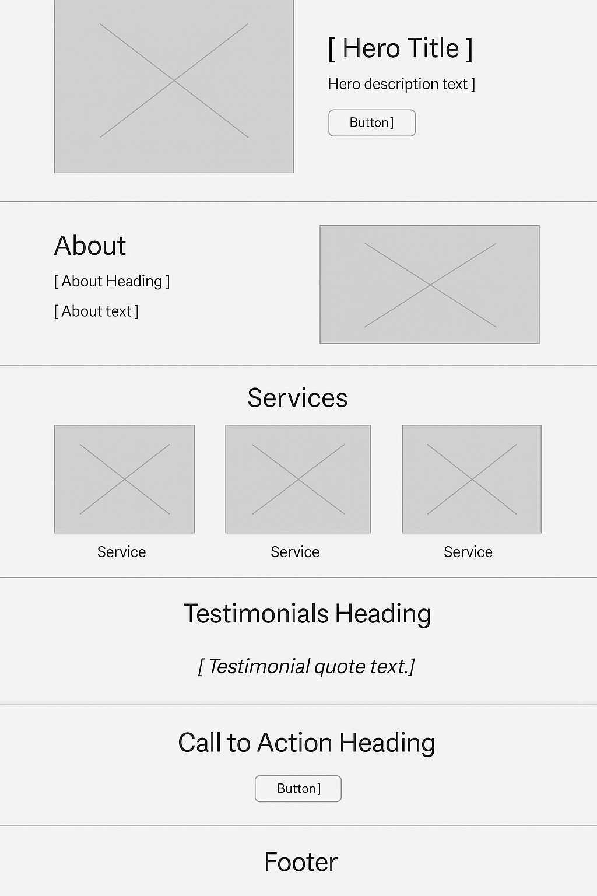

Site Name: Buffin Ancestry – Find the Roots That Bind
The name reflects our mission to preserve the rich heritage of the Buffin family and related branches like the Fields, Okra, and Key families. The logo integrates a tree motif and traditional typography to honor legacy and connection.
Buffin Ancestry is a digital family archive dedicated to preserving the lineage, stories, documents, and photos of the Buffin family and its extended branches. Visitors can browse family trees, view historical photos, submit their stories, and learn about the family's journey through time.
#3D2C2E – Primary header and nav text
#F9F5F1 – Background color
#8B5E3C – Buttons and highlights
#29221D – Footer and strong accents
Raleway: Used for all paragraph and body text.
Mobile & Desktop Layout
